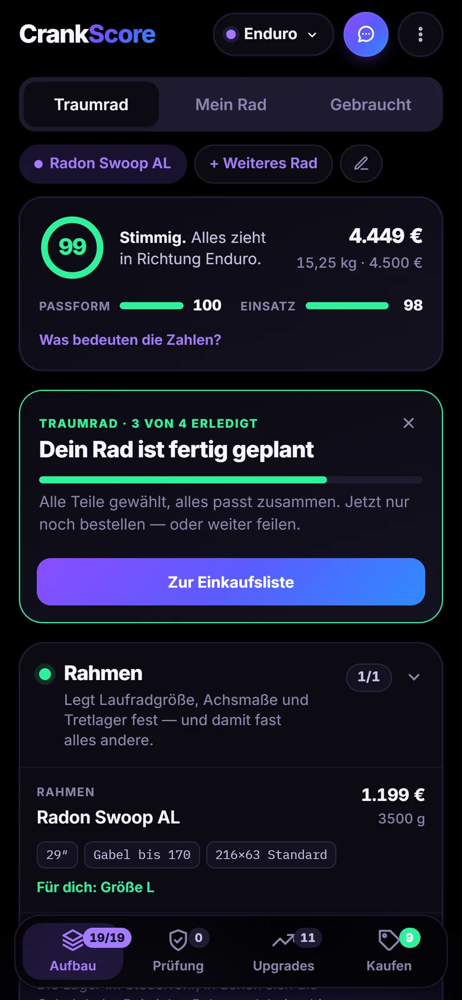
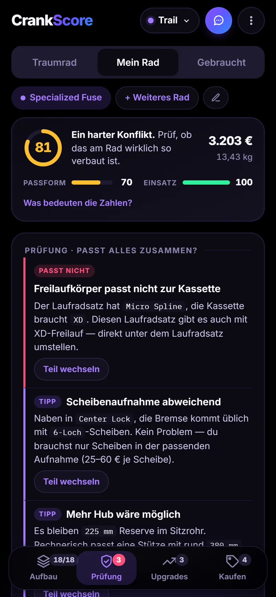
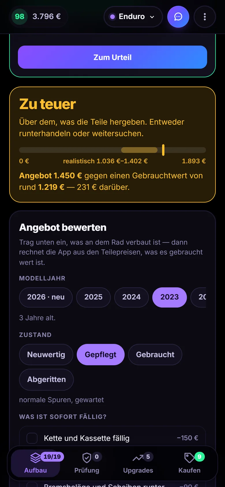
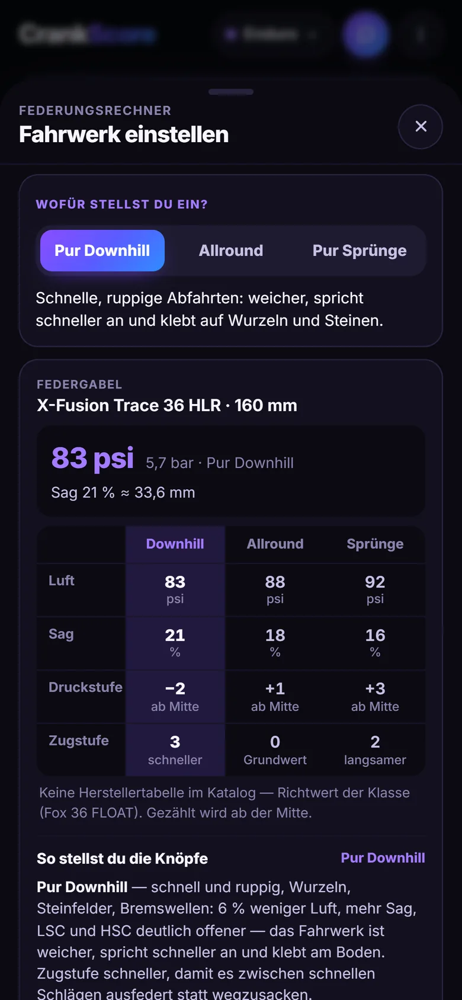
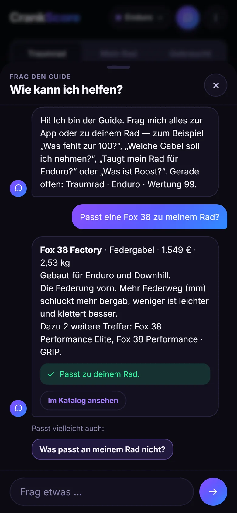

Traumrad
Ein neues Rad planen
Sag, wofür du fährst und wie viel du ausgeben willst. Der Assistent stellt ein Rad zusammen, bei dem jedes Teil passt — danach tauschst du, was du anders willst.
Enduro · 4.449 € · Wertung 99
MTB-Planer · kommt bald
CrankScore prüft, ob die Teile deines Mountainbikes zusammenpassen — Achsen, Freilauf, Einbaumaße, Klemmungen. Du siehst sofort, was nicht passt und womit es passt.
CrankScore ist in der Testphase. Bald läuft die App im Browser — auf dem Handy wie eine App, kostenlos und ohne Konto.
Prüfstand
Enduro · Radon Swoop AL
Stimmig. Keine Konflikte.
4.449 € · 15,25 kg
Drei Modi
Drei Fragen, die sich beim Mountainbike immer wieder stellen — und hinter jeder steckt dieselbe Prüfung.
Echte App · Beispielanzeige mit Beispielrädern

Traumrad
Sag, wofür du fährst und wie viel du ausgeben willst. Der Assistent stellt ein Rad zusammen, bei dem jedes Teil passt — danach tauschst du, was du anders willst.
Enduro · 4.449 € · Wertung 99

Mein Rad
Trag ein, was verbaut ist. Die App findet, was nicht zusammenpasst, erklärt warum und zeigt, welches Teil es löst.
Freilauf Micro Spline ≠ Kassette XD

Gebraucht
Trag die Teile aus der Anzeige ein, dazu Alter, Zustand und Preis. Die App rechnet den Gebrauchtwert aus — bevor du zu viel bezahlst.
1.450 € statt rund 1.219 €
Was drinsteckt


So geht's
So wird es laufen, sobald CrankScore fertig ist.
Größe, Fahrstil, Budget. Dauert rund zwei Minuten.
Der Assistent baut einen passenden Aufbau. Tausch, was du anders willst — die App zeigt dir nur, was passt.
Stimmt die Wertung, bestellst du über die Einkaufsliste im Shop.
738 Teile125 Marken7 Disziplinen0 €kein Kontoläuft offline
Fragen
Die App ist in der Testphase. Wir veröffentlichen sie, sobald Katalog und Prüfung so weit sind, dass du dich darauf verlassen kannst.
Nichts. Kein Abo, keine Anmeldung, kein Konto.
Über Partnerlinks: Manche Shop-Links werden mit „Anzeige“ markiert sein. Kaufst du darüber, bekommt CrankScore eine kleine Provision — dein Preis bleibt gleich. Welches Teil passt, entscheidet die Prüfung, nicht die Provision.
Nur auf deinem Gerät, im Speicher deines Browsers. Deine Räder, Maße und Fotos gehen an keinen Server.
Nein. CrankScore läuft im Browser. Auf dem Handy legst du sie auf den Startbildschirm — dann startet sie wie eine App und läuft auch offline.
Maße und Standards sind aus Herstellerangaben recherchiert. Luftdruck und Klicks sind Startwerte zum Feinstellen. Im Zweifel gilt das Datenblatt des Herstellers.
Nein. CrankScore plant Mountainbikes ohne Motor — XC, Trail, Enduro, Downhill, Dirt, Slopestyle und Trial.
Zwei Minuten Fragen, dann steht dein erster Aufbau — sobald CrankScore fertig ist.